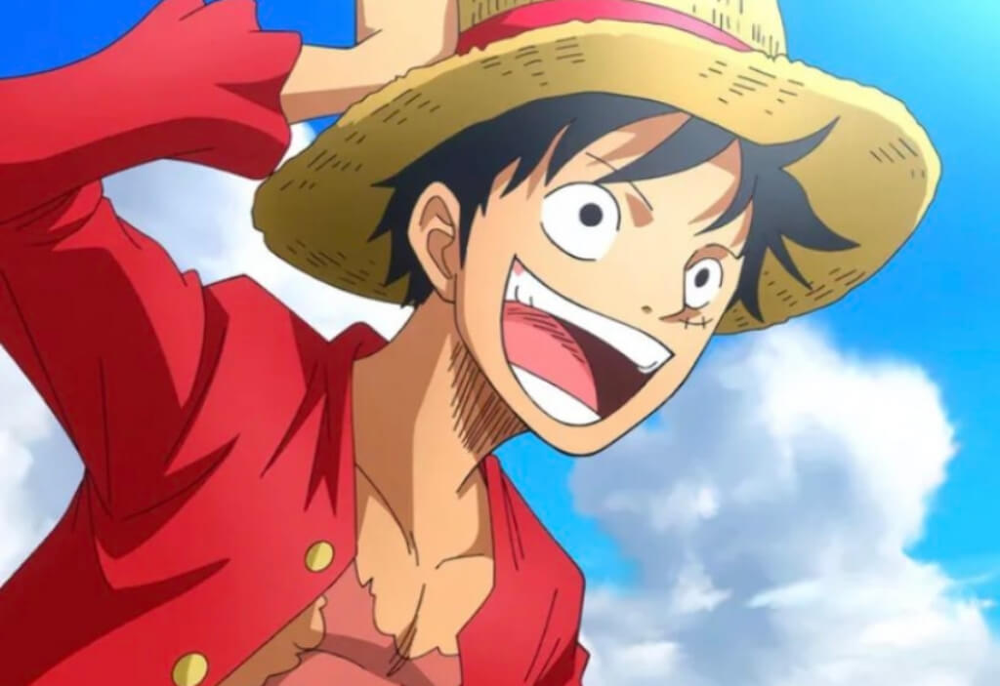
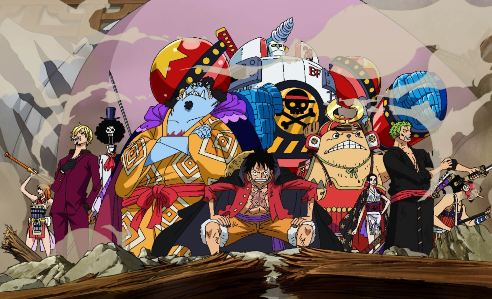
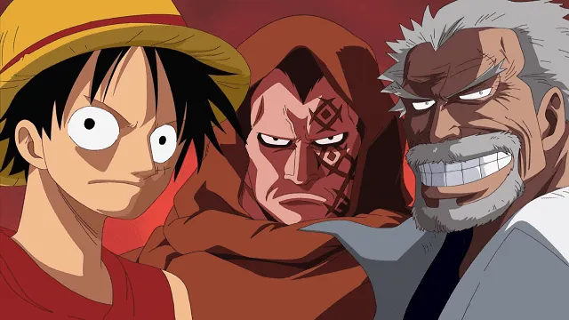
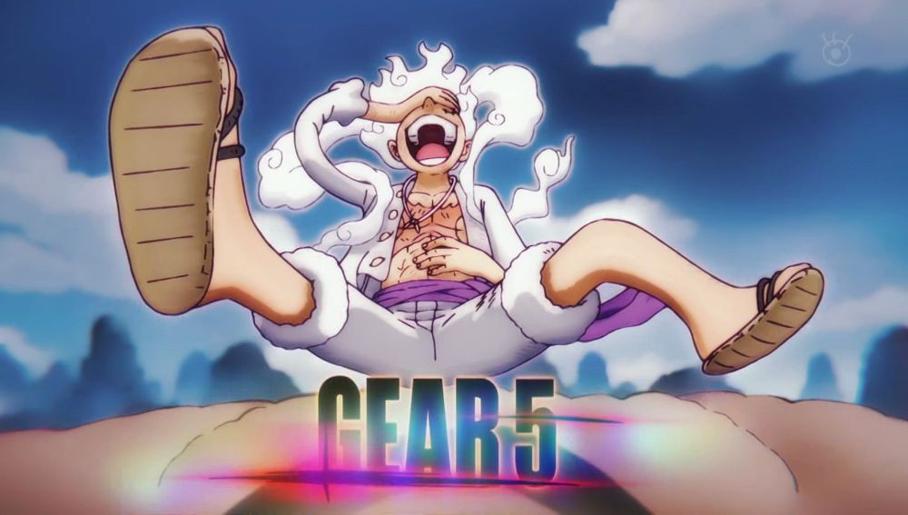

Monkey D. Luffy
Perkenalan

Monkey D. Luffy, juga dikenal sebagai "Luffy Topi Jerami" dan umumnya sebagai "Topi Jerami", adalah pendiri dan kapten dari Bajak Laut Topi Jerami yang semakin terkenal dan kuat, serta yang paling kuat dari petarung topnya. Dia
ingin menemukan harta karun legendaris yang ditinggalkan oleh mendiang Gol D. Roger dan dengan demikian menjadi Raja Bajak Laut, yang akan membantu memfasilitasi mimpinya yang tidak diketahui yang dia ceritakan hanya kepada
Shanks, saudara laki-lakinya, dan krunya. Dia percaya bahwa menjadi Raja Bajak Laut berarti memiliki kebebasan terbesar di dunia.
Lahir di Desa Foosha, Luffy adalah anak dari Monkey D. Dragon, pemimpin dari Tentara Revolusioner, dan cucu dari pahlawan Marinir Monkey D. Garp, dan keluarga mereka membawa inisial dan Kehendak D. Pada usia 7 tahun, Luffy
secara tidak sengaja memakan buah Gomu Gomu no Mi, yang mengubah tubuhnya menjadi karet. Shanks juga memberi Luffy topi jerami yang telah menjadi aksesori khas Luffy, setelah menghadiahkannya kepada bocah itu sebagai bagian dari
janji mereka untuk bertemu lagi suatu hari setelah dia menjadi bajak laut yang hebat. Tumbuh di Pulau Dawn di bawah asuhan Curly Dadan, Luffy berteman dan menjadi saudara tersumpah dari mendiang "Tinju Api" Portgas D. Ace dan
Kepala Staf Revolusioner Sabo.
Luffy telah melawan banyak kekuatan global di sekitarnya, dimulai dengan melawan bajak laut paling kuat di East Blue dan pindah ke bentrokan melawan Marinir, Tujuh Panglima Perang Laut, Cipher Pol , Bangsawan Dunia, dan bahkan
Empat Kaisar dari Grand Line, muncul sebagai pemenang di sebagian besar pertempuran ini. Dia menginvasi dan secara tidak langsung menyebabkan pemusnahan Enies Lobby, melarikan diri dari Impel Down yang tak tertembus, dan menjadi
tokoh utama dalam Perang Puncak Marineford. Dia juga telah mengalahkan atau berteman dengan tujuh dari sebelas Panglima Perang masa lalu atau sekarang yang dikenal sebelum pembubaran organisasi. Selanjutnya, Luffy telah
menginvasi wilayah Empat Kaisar dalam beberapa kesempatan, dan akhirnya berhasil mengalahkan salah satunya.
Luffy telah membuat langkah luar biasa dalam kehidupan pembajakannya, dengan hadiahnya sangat mencerminkan fakta ini. Dia mendapatkan hadiah pertamanya sebesar 30.000.000 Berry karena mengalahkan kapten bajak laut terkuat di
East Blue, yang kemudian meningkat menjadi 100.000.000 Berry setelah mengalahkan Crocodile di Alabasta. Setelah invasi krunya ke dalam dan melarikan diri dari Enies Lobby, hadiahnya dinaikkan menjadi 300.000.000 Berry. Karunia
yang cukup besar setelah tiba di Kepulauan Sabaody menyebabkan Luffy, bersama dengan Zoro termasuk di antara sebelas "Super Rookie", bajak laut yang secara bersamaan mencapai Red Line dengan hadiah lebih dari 100.000.000 Berry
sesaat sebelum Perang Puncak. Dia, sepuluh Super Rookie lainnya, dan Marshall D. Teach akan disebut sebagai "Generasi Terburuk".
Dua tahun setelah perang, dengan hadiahnya meningkat menjadi 400.000.000 Berry, dia memasuki Dunia Baru dan mulai menantang Kaisar dan sekutu mereka secara langsung, dengan hadiahnya naik menjadi 500.000.000 Berry setelahnya Arc
Dressrosa, dan kemudian hingga 1.500.000.000 Berry setelah pengungkapan global bahwa dia adalah saudara Sabo dan keberadaan Armada Besar Topi Jerami menjadi publik, serta peristiwa Arc Pulau Whole Cake. Setelah memimpin
Penggerebekan di Onigashima dan mengalahkan Kaidou serta dia menjadi anggota Empat Kaisar, hadiahnya dinaikkan menjadi 3.000.000.000 Berry.
Hubungan
Bajak Laut Topi Jerami

Karena dia adalah kapten dan merekrut semua kru secara pribadi, Luffy sangat peduli pada krunya. Sejauh menyangkut kapten, Luffy melihat kru rekannya yang lain sama dengan berbeda dengan kapten bajak laut lainnya, yang
sebagian besar melihat mereka sebagai bawahan bawahan. Awaknya sebagian besar memanggilnya dengan nama, bukan dengan kehormatan atau "Kapten". Faktanya, Luffy adalah satu-satunya yang umumnya dipukuli dan dipesan di kapal.
Nami tidak pernah ragu-ragu untuk memberikan Luffy pemukulan karena kebodohannya (meskipun, dengan gaya komedi). berikut adalah anggota kru bajak laut topi jerami.
- Roronoa Zoro (Wakil Kapten)
- Nami (Navigator)
- Usopp (Penembak Jitu)
- Vinsmoke Sanji (Koki)
- Tony Tony Chopper (Dokter)
- Nico Robin (Arkeolog)
- Franky (Pembuat Kapal)
- Brook (Pemusik)
- Jinbe (Nahkoda)
Keluarga

Keluarga Monkey D. Luffy dipenuhi dengan orang-orang yang sangat terkenal dan kuat. Ini termasuk kakeknya, Monkey D. Garp, yang dianggap sebagai pahlawan di dalam Marinir dan orang yang telah melawan Gol D. Roger, Raja Bajak
Laut. Ayahnya, Monkey D. Dragon, adalah kepala dari Tentara Revolusioner. Kedua saudara laki-lakinya adalah Portgas D. Ace dan Sabo, meskipun mereka tidak memiliki hubungan darah dengannya tetapi adalah saudara angkatnya
melalui upacara sakazuki. Ace menjadi Komandan Divisi Kedua di bawah Kaisar, Shirohige, yang dianggap sebagai orang terkuat yang masih hidup, dan mendapatkan hadiah sebesar 550.000.000 Berry. Sabo adalah komandan kedua Pasukan
Revolusioner, bertugas langsung di bawah ayah Luffy, Dragon, dan memiliki harga buronan 602.000.000 Berry. Ibu angkatnya, Curly Dadan, adalah bandit dan bos dari Keluarga Dadan. Identitas ibu kandung Luffy, kakeknya selain
Monkey D. Garp, dan salah satu neneknya masih belum diketahui.
- Monkey D. Dragon (Ayah Kandung)
- Monkey D. Garp (Kakek Kandung)
- Curly Dadan (Ibu Angkat)
- Portgas D. Ace (Saudara Angkat)
- Sabo (Saudara Angkat)
Kekuatan

Ciri khas bertarungnya adalah menyerang dengan memanjangkan bagian tubuhnya. Semua nama jurusnya selalu diawali dengan kata "Gomu-gomu" dan kemudian diikuti dengan nama senjata atau artileri (contoh:
Gomu Gomu no Pistol, Gomu Gomu no Bazooka, Gomu Gomu no Gatling, dll).
Gear Second: Teknik mempercepat aliran darah tetapi organ tubuhnya tidak hancur karena atribut karet pada tubuhnya. Efek dari Gear Second ini adalah kecepatan atau agility meningkat. Kata "jet" juga ditambahkan
dalam nama jurusnya (contoh: Gomu Gomu no Jet pistol). Jika ditambah dengan Haki, tinjunya jadi menimbulkan efek ledakan.
Gear Third: Teknik memperbesar tulang dengan meniupnya seperti balon. Efek dari Gear Third adalah kekuatan serangannya meningkat, namun kecepatan serangan menurun. Kata "Gigant" juga ditambahkan dalam nama
jurusnya (contoh: Gomu Gomu no Gigant Pistol). Jika ditambahkan haki, tangannya menjadi hitam dan semakin keras.
Gear Fourth: Teknik memperbesar badan seukuran gorila, dengan menggabungkan boushuku haki. Kekuatan ini mirip tubuh gorila dengan daya hancur yang sangat kuat. Dan ditambah dengan kekuatan tinjuan yang bisa mental di
udara. (kekuatan ini muncul di Dressrosa sewaktu melawan sichibukai Donquixote Doflamingo).
Gear Fifth: Penggunanya akan memiliki tubuh dengan karakteristik seperti karet. Dia akan bertarung dengan penuh imajinasi dan membuat semua orang tersenyum. "Pejuang Kebebasan" yang juga dikenal sebagai "NIKA SANG DEWA
MATAHARI". Kebangkitannya akan di tandai oleh meningkatnya "Kekuatan Lengan" serta "Kebebasan" pada tubuhnya yang seperti karet. Kekuatannya dianggap sebagai kekuatan paling tidak masuk akal di dunia.